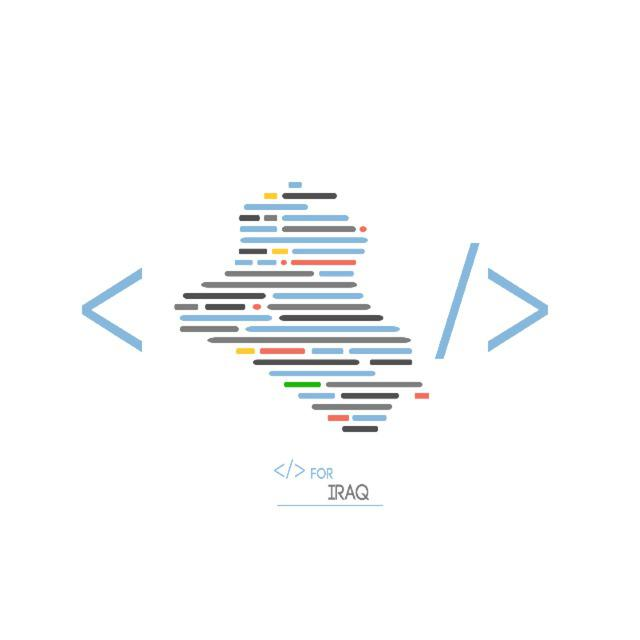

وهي مبادرة إنسانية غير ربحية تهدف الى خدمة المجتمع عن
طريق البرمجة . تعتبر هذه المبادرة مبادرة تعليمية حقيقية
ترعى المهتمين بتعلم تصميم وبرمجة تطبيقات الهاتف الجوال
ومواقع الانترنت وبرامج الحاسوب والشبكات والاتصالات ونظم
تشغيل الحاسوب باستخدام التقنيات مفتوحة المصدر كما تؤفر
لهم جميع الدروس التعليمية اللازمة وبشكل مجاني تمامأ
بل الاهم من ذلك تعتمد على مبدأالمواطنةوالمشاركة
الفاعلة في تأسيس وبناء المجتمع تدعو هذه المبادرة جمبع
الطلبة والخريجين والهواة والاساتذة الجامعيين والمهتمين
مجال البرمجة وتقنيات المعلومات وكذلك الاختصاصات الاخرى
الاسراع في التطوع والمشاركة الفعلية لاجل الارتقاء بواقع البلد . حيث
تعتبر فرصة عظيمةلكتساب الخبرة والمهارة عن طريق تصميم
وتنفيذ برامج وتطبيقات خدمية من شأنها خدمه المواطن وذلك
ضمن مجاميع عمل نشطة وفعالة يتعاون فيها جميع الافراد
كفريق واحد يتبادل آلاراء والخبرات ويطرح الافكار والاقتراحات
لمناقشتها وتطبيقها على أرض الواقع . كما تفتح المجال لجميع